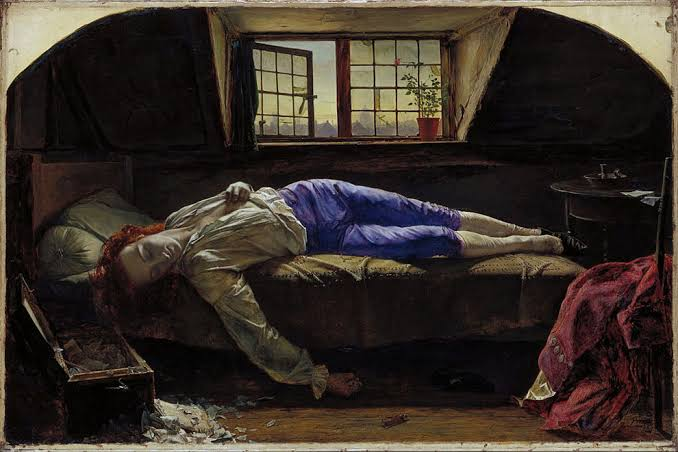

And in the end , it was just a mirror...
projecting nothing but the bleeding soul of mine
And a note with faded ink and a broken pen
which read as "maybe use the blood to quench the thirst"
I am Muhammad Saad Bilal, a student of Software Engineering at NUST, and I have learned to love the quiet hours, the ones when the hostel has fallen asleep and only the soft glow of a screen keeps me company. In those hours I write code the way some people write letters they never send: patiently, tenderly, and with a little sorrow folded into every line. I have worked in Python, C++ and Kotlin, and I have built small things for the web, always chasing the hope that a stubborn thing might someday run and be whole. Away from the machine, I walk the tracks at morning when the world is still grey, I lose myself to chess and to tennis as the evening bleeds out over the courts, and I fill the long nights with poetry and with the old stories of men and wars that time has since forgotten. A physics olympiad once taught me to keep asking why, and teaching others has taught me that what we know means little until it is given away. This portfolio is only a small, dim window into all of that. Come in softly, stay as long as you wish, and forgive the silences.